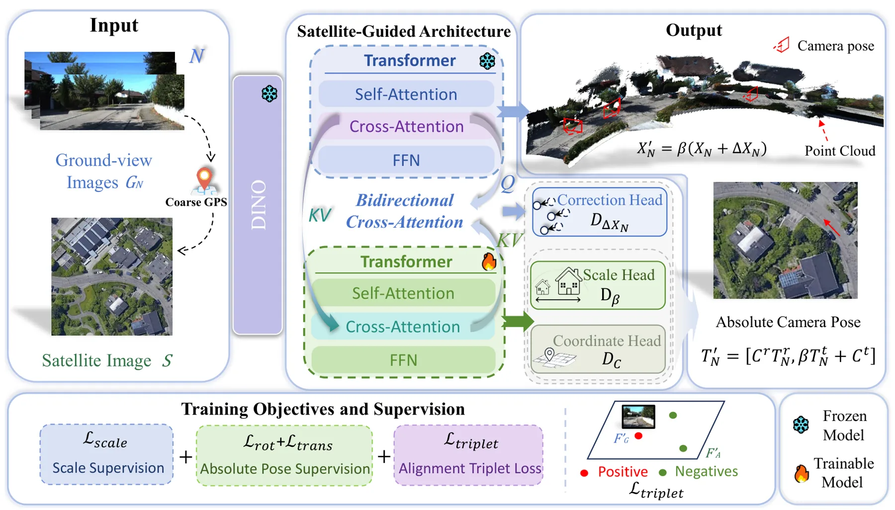
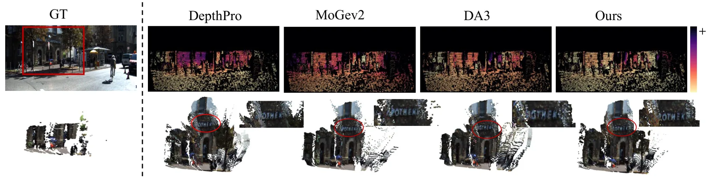
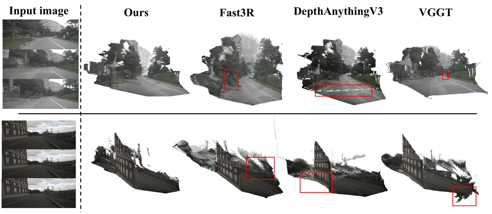
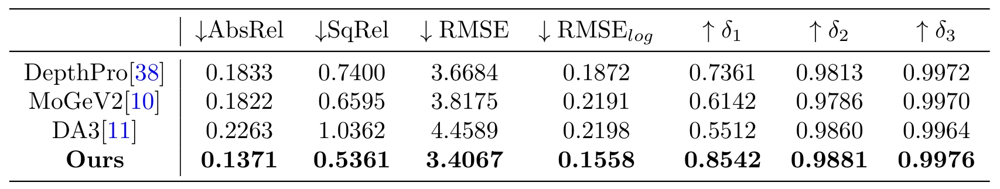
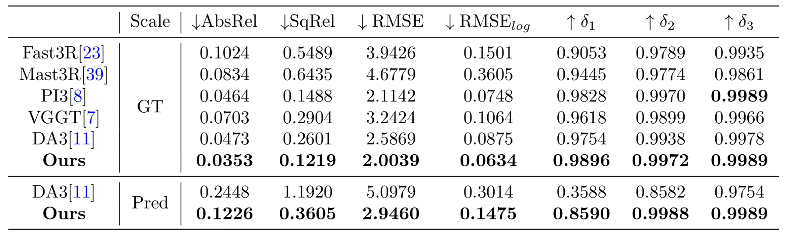
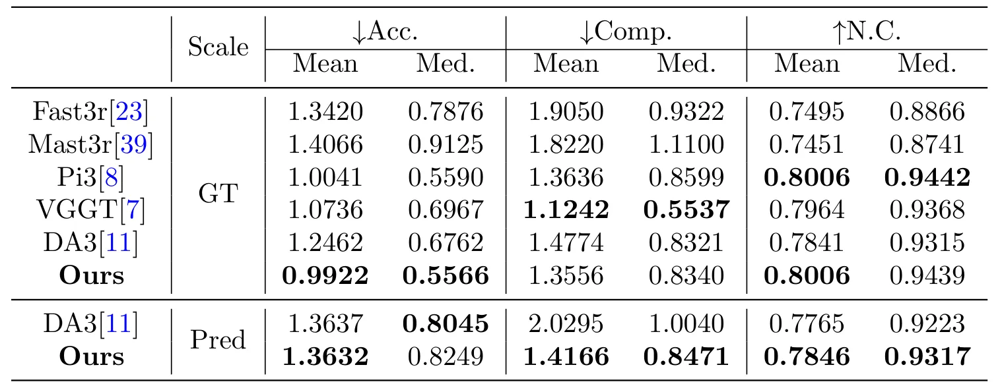

借助卫星图像为前馈三维重建模型赋予米级尺度Empowering Feed-Forward Reconstruction Models with Metric Scale via Satellite Images
与 GNSS/地理坐标、自动驾驶重建和 cross-view localization 连接紧密，是今天最值得定位融合方向关注的论文之一。
一句话工作总结
该框架用卫星影像作为外部米级参考，解决前馈三维重建的尺度模糊，并同时改善几何与相机定位。
摘要
前馈式三维重建模型在不同场景上表现出较强泛化能力，但大多数只能恢复未知全局尺度下的几何，这限制了它们在需要度量环境理解的应用中的使用。现有 metric reconstruction 方法常依赖大规模度量标注或精确相机标定，成本高且在真实场景中不总是可靠。本文提出 satellite-guided framework，用易获得的卫星影像作为全局度量参考。给定粗略相机位姿后，方法检索局部 satellite patch，并通过 bidirectional cross-view interaction 与前馈重建 backbone 融合。通过强制重建场景与卫星参考一致，模型推断绝对尺度、细化场景几何，并在 metric coordinate frame 下估计相机位姿。论文在 KITTI、nuScenes 和 Oxford RobotCar 上展示 metric depth、多视角点云重建和跨视角相机定位的稳定提升。
Feed-forward 3D reconstruction models have recently shown strong generalization across diverse scenes, yet most of them recover geometry only up to an unknown global scale. This scale ambiguity limits their use in applications that require metric understanding of the environment. Existing metric reconstruction methods commonly rely on large-scale metric annotations or accurate camera calibration, both of which are costly or unreliable in many real-world settings. We propose a satellite-guided framework for resolving scale ambiguity in feed-forward 3D reconstruction. The key idea is to use readily available satellite imagery as a global metric reference. Given a coarse camera pose, our method retrieves a local satellite patch and integrates it with a feed-forward reconstruction backbone through bidirectional cross-view interaction. By enforcing consistency between the reconstructed scene and the satellite reference, the model infers absolute scale, refines scene geometry, and estimates camera pose in a metric coordinate frame. Experiments on KITTI, nuScenes, and Oxford RobotCar show consistent improvements in metric depth estimation, multi-view point-cloud reconstruction, and cross-view camera localization, while preserving strong generalization across datasets and geographic regions.
中文解读摘录
- 作者：Yongfei Guo, Qizhou Huo, Xuan Sun, Yuanhao Gong；类别：cs.CV / cs.GR / cs.MM / eess.IV / math.OC；发布日期：2026-06-06；采集 score=17
- 核心问题：标准 3DGS photometric loss 对平坦区和结构丰富区一视同仁，容易牺牲边缘、轮廓和细节；EGGS 虽引入 edge-guided weighting，但主要依赖一阶梯度和线性权重。
- 方法亮点：LEGS 用二阶 Laplacian 结构响应替代一阶梯度响应，并通过非线性 response-to-weight 函数生成 pixel-wise loss 权重；渲染管线不变，属于可插拔的 loss-level 扩展。
- 结果信号：在完整 Tanks&Temples 与 Mip-NeRF360 上，论文称相对 3DGS 最高提升 1.68 dB PSNR，相对 EGGS 最高提升 0.52 dB；迁移到 FastGS/FasterGS 后最高仍可提升 1.69 dB。
- 关注价值：如果代码可复现，它是低侵入式提升 3DGS 地图边缘清晰度和细节保真的方法，适合与 SLAM/重建后的 Gaussian 地图优化阶段结合。
图表/页面预览

{kind=link}

{kind=link}

{kind=link}

{kind=link}

{kind=link}

{kind=link}
